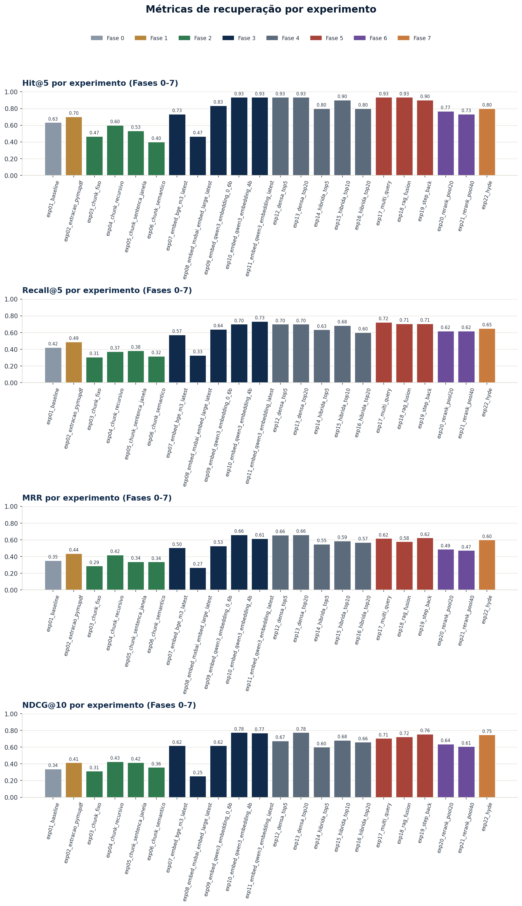
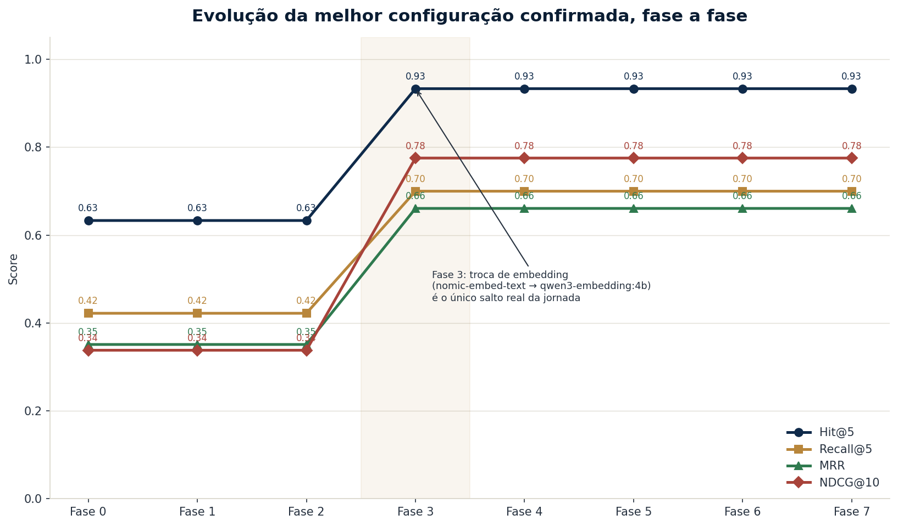
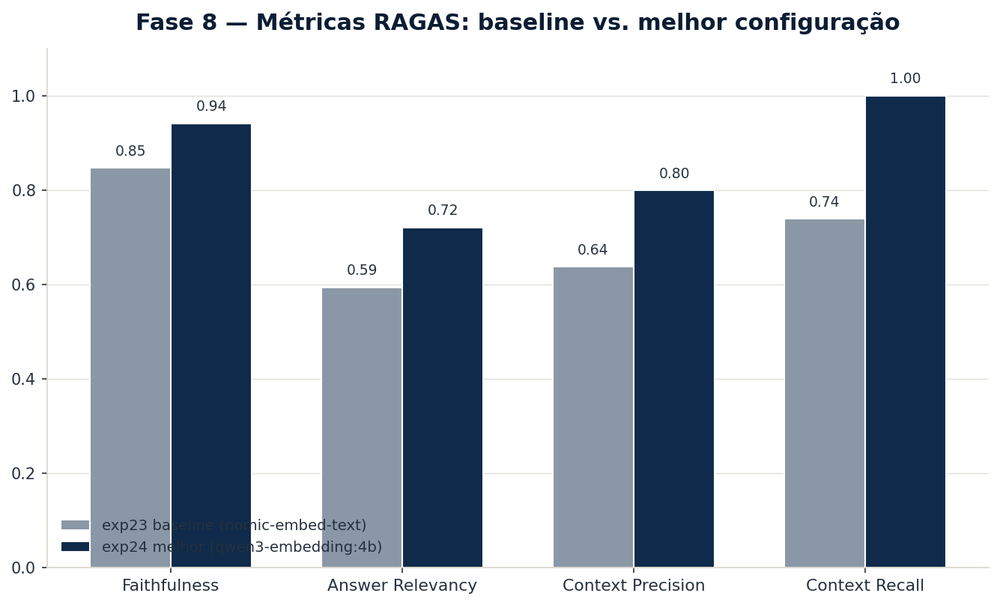

1. A fonte de dados e por quê
Fonte escolhida: "Cadeia de Custódia da Prova Pericial: uma análise da Lei 13.964/2019" (GIACOMOLLI; AMARAL, 2020) — artigo acadêmico em PDF nativo (com camada de texto, não escaneado), tratando da cadeia de custódia de vestígios/provas periciais no processo penal brasileiro, a partir da Lei 13.964/2019 (Pacote Anticrime).
Escolhido, em primeiro lugar, porque o Grupo 7 é formado por Peritos Criminais, para quem a cadeia de custódia da prova pericial é um tema central da rotina profissional (rastreio e integridade de vestígios do local de crime até o laudo) — um caso de uso real de RAG sobre esse tema seria apoiar peritos e operadores do direito a consultar rapidamente a legislação e a doutrina sobre cadeia de custódia. Também é diretamente relacionado ao tema da disciplina (Direito e Segurança Pública) e tem estrutura mista — texto corrido, seções tituladas, referência a artigos de lei e a jurisprudência (Corte Interamericana de Direitos Humanos) — o que permite testar diferentes técnicas de chunking e recuperação ao longo da jornada. Essa origem profissional também orienta o tipo de pergunta incluído no gabarito (Seção 2): dúvidas práticas de procedimento (lacre, embalagem, central de custódia), não só teóricas.
2. O dataset de avaliação (gabarito)
avaliacao/dataset.json — construído manualmente sobre o artigo:
- 18 documentos (D01–D18): segmentos temáticos do artigo, distribuídos ao longo de todo o texto (não são os chunks reais gerados pela ingestão — servem de unidade de gabarito).
- 30 perguntas (
queries_benchmark), em 3 tipos (Seção 5 doRoteiro_Final.md): - factual (Q01–Q12): resposta está em 1 segmento.
- reformulável (Q13–Q22): mesmo conteúdo, mas em linguagem coloquial/leiga — testa o ganho de multi-query / step-back.
- multihop (Q23–Q30): resposta exige combinar 2–3 segmentos — testa o ganho de RAG-Fusion / grafo.
- Perguntas escritas em linguagem natural, evitando copiar termos exatos do texto (para não inflar artificialmente a baseline — lição da Seção 5 do roteiro).
relevancia: nota 2 (muito relevante) / 1 (relevante) por documento, para NDCG graduado.
Como a recuperação é avaliada sem id_original estável: o pipeline do projeto
não grava um id de chunk rastreável até o documento de origem. A avaliação identifica
cada chunk recuperado pelo conteúdo, procurando "marcadores" (trechos distintivos)
de cada D0x no texto do chunk (ver avaliacao/README.md para o detalhe). É uma
aproximação documentada, revisável via avaliacao/detalhe_<exp>.json.
3. Metodologia
- Métricas de recuperação: Hit@5, Recall@5, MRR, NDCG@10 (
avaliacao/avaliar_recuperacao.py). - Métricas de geração (RAGAS): Faithfulness, Answer Relevancy, Context Precision/Recall
(
avaliacao/rodar_fase8_ragas.py) — rodadas ao final (Fase 8) na baseline (exp23) e na melhor configuração (exp24); ver Seção 5, Fase 8. - top_k: 10 chunks recuperados por consulta (cobre Hit@5/Recall@5 e NDCG@10 na mesma rodada).
- Experimento controlado: uma variável por vez. Cada fase reindexa o OpenSearch fixando tudo o que não está sendo testado (mesmo embedding, mesma técnica de busca, mesmo top_k) e o script de cada fase restaura o índice para o estado da baseline ao final, para a próxima fase não herdar configuração errada.
- Registro: uma linha por experimento em
avaliacao/resultados.csv(exp,fase,mudança, métricas, observação) +avaliacao/detalhe_<exp>.jsoncom os chunks recuperados por pergunta (auditoria). - Infra: OpenSearch local (Docker), embeddings via Ollama (
nomic-embed-text, 768d, baseline), geração via LLM agnóstico a provedor (app/config.py::config_llm()) — Groq (llama-3.3-70b-versatile) nas Fases 0-7; trocado para OpenRouter (meta-llama/llama-3.3-70b-instruct, mesmo modelo Llama 3.3 70B) na Fase 8 por causa do limite diário de tokens do tier gratuito da Groq (nota técnica na Seção 5, Fase 8).
4. Baseline (Fase 0)
Projeto rodado como veio: ingestão do PDF forçando estrategia=opensearch (a
heurística automática do projeto rotearia para o grafo/LightRAG por causa da
densidade de entidades nomeadas do texto — decisão documentada, ver Seção 8.2),
chunking auto (a heurística escolheu hierárquico, por o texto ter ≥3 títulos),
embedding nomic-embed-text, busca baseline (sem reescrita de query), top_k=10.
143 chunks indexados.
| Métrica | Valor |
|---|---|
| Hit@5 | 0,633 |
| Recall@5 | 0,422 |
| MRR | 0,351 |
| NDCG@10 | 0,338 |
| Latência média | 2,72 s |
Ponto de partida: cobre a maioria das perguntas no top-5 (Hit@5 alto), mas o relevante raramente vem em 1º lugar (MRR baixo) e o ranking fino ainda é fraco (NDCG@10 baixo) — espaço claro de melhoria nas próximas fases.
5. Experimentos por fase
Fase 1 — Extração (exp02_extracao_pymupdf)
Hipótese: texto mal extraído limita tudo a jusante (Docling, com sua camada de markdown/estrutura, deveria extrair melhor que um fallback de texto puro).
Mudança: reextração do mesmo PDF via PyMuPDF (texto puro, sem markdown/OCR),
mantendo o chunking fixo em hierárquico (igual ao baseline) para isolar a
extração como única variável (avaliacao/rodar_fase1_extracao.py).
Resultado:
| Métrica | exp01 (Docling) | exp02 (PyMuPDF) | Δ |
|---|---|---|---|
| Hit@5 | 0,633 | 0,700 | +0,067 |
| Recall@5 | 0,422 | 0,489 | +0,067 |
| MRR | 0,351 | 0,436 | +0,085 |
| NDCG@10 | 0,338 | 0,415 | +0,077 |
| Chunks gerados | 143 | 134 | — |
Análise: resultado contraintuitivo — o extrator "mais simples" (PyMuPDF) venceu
o Docling em todas as métricas de recuperação. Hipótese para o motivo: a marcação
markdown do Docling (#, ##, | de tabela) introduz tokens que não aparecem nas
perguntas em linguagem natural dos usuários, diluindo a similaridade semântica dos
embeddings; além disso, como o HierarchicalDocumentSplitter conta palavras para
decidir os limites de chunk, os símbolos de markdown deslocam esses limites — daí os
143 chunks do Docling vs 134 do PyMuPDF para o mesmo texto-fonte. Amostras salvas em
avaliacao/amostras_extracao/{docling,pymupdf}.txt para inspeção manual.
Achado relevante para o relatório final: o Docling costuma ganhar em documentos complexos (múltiplas colunas, tabelas, PDFs escaneados) — aqui, num PDF acadêmico de coluna única e bem formatado, a extração "burra" saiu na frente. Vale frisar isso como trade-off, não como regra geral.
(As próximas fases usam o índice restaurado ao estado do Docling/baseline — o ganho do PyMuPDF nesta fase ainda não foi "adotado" como configuração corrente; decisão sobre qual extração vira a base das fases seguintes fica para a Seção 7 deste relatório, ao consolidar tudo.)
Fase 2 — Chunking (exp03–exp06)
Hipótese: a granularidade do chunk muda o que é recuperável.
Mudança: com a extração fixa em Docling (a mesma do baseline/exp01), testadas as
outras 4 técnicas de chunking do projeto — fixo, recursivo, sentença_janela,
semântico — cada uma reindexando do zero (avaliacao/rodar_fase2_chunking.py).
hierárquico não foi reindexado de novo: é exatamente a configuração do exp01.
Resultado:
| Técnica | Hit@5 | Recall@5 | MRR | NDCG@10 | Chunks |
|---|---|---|---|---|---|
| hierárquico (exp01) | 0,633 | 0,422 | 0,351 | 0,338 | 143 |
| fixo (exp03) | 0,467 | 0,306 | 0,287 | 0,312 | 72 |
| recursivo (exp04) | 0,600 | 0,372 | 0,418 | 0,426 | 81 |
| sentença_janela (exp05) | 0,533 | 0,383 | 0,338 | 0,416 | 240 |
| semântico (exp06) | 0,400 | 0,317 | 0,336 | 0,358 | 96 |
Análise: nenhuma técnica domina em tudo — há um trade-off entre cobertura e
qualidade do ranking. hierárquico continua sendo o melhor em Hit@5/Recall@5 (traz
o relevante no top-5 com mais frequência), mas recursivo tem o melhor MRR e NDCG@10
(quando acerta, acerta mais perto do topo do ranking) — apesar de gerar só 81 chunks
(bem menos que os 143 do hierárquico), sugerindo que blocos de ~200 palavras
respeitando frase/parágrafo capturam o suficiente de contexto sem diluir a
similaridade com blocos grandes demais. fixo (chunks cegos de 200 palavras, sem
respeitar limites de frase) e semântico (corte por mudança de tópico, 96 chunks)
saíram piores em todas as métricas — no caso do semântico, possivelmente porque o
artigo é curto e coeso o bastante para o corte por tópico não trazer benefício real,
só reduzir a granularidade. sentença_janela gerou muito mais chunks (240, blocos de
3 sentenças) e teve o 2º melhor NDCG@10, mas ficou atrás em Hit@5/Recall@5.
Como o roteiro pede otimizar recuperação (cobertura) antes de geração, e Hit@5/Recall@5
são as métricas de cobertura, hierárquico segue como chunking de referência para as
próximas fases — mas recursivo fica marcado como candidato forte a reavaliar quando
somarmos reranking (Fase 6), já que reranking tende a amplificar o benefício de um MRR
melhor.
(Índice restaurado para hierárquico ao final da fase, para a Fase 3 partir do
mesmo estado do baseline.)
Fase 3 — Modelo de embedding (exp07–exp11)
Hipótese: o modelo de embedding define o teto da busca densa.
Mudança: com extração (Docling) e chunking (hierárquico) fixos, testados todos
os modelos de embedding baixados no Ollama local além do baseline
(nomic-embed-text): bge-m3, mxbai-embed-large e as 3 variantes de tamanho do
qwen3-embedding (0.6b/4b/8b). Dimensão de cada modelo medida em runtime — os Qwen3
não estavam mapeados em app/config.py::DIMENSAO_EMBEDDING
(avaliacao/rodar_fase3_embedding.py).
Resultado:
| Modelo | Dim. | Hit@5 | Recall@5 | MRR | NDCG@10 |
|---|---|---|---|---|---|
| nomic-embed-text (exp01, baseline) | 768 | 0,633 | 0,422 | 0,351 | 0,338 |
| bge-m3 (exp07) | 1024 | 0,733 | 0,572 | 0,505 | 0,618 |
| mxbai-embed-large (exp08) | 1024 | 0,467 | 0,328 | 0,269 | 0,253 |
| qwen3-embedding:0.6b (exp09) | 1024 | 0,833 | 0,639 | 0,527 | 0,618 |
| qwen3-embedding:4b (exp10) | 2560 | 0,933 | 0,700 | 0,661 | 0,775 |
| qwen3-embedding:8b "latest" (exp11) | 4096 | 0,933 | 0,733 | 0,615 | 0,775 |
Análise: de longe a fase com maior ganho da jornada até aqui. A família Qwen3-Embedding varre o baseline em todas as métricas, mesmo na menor variante (0.6b): Hit@5 salta de 0,633 para 0,833–0,933, e o MRR praticamente dobra. Dentro da família Qwen3, o ganho de 0.6b → 4b é grande (MRR 0,527 → 0,661), mas de 4b → 8b o ganho é marginal e misto (8b vence em Recall@5, mas perde em MRR para o 4b) — mais que dobrar a dimensão (2560 → 4096) e o tamanho do modelo não se traduziu em ganho proporcional. Custo-benefício: qwen3-embedding:4b parece o melhor equilíbrio (dimensão bem menor que o 8b, latência parecida, métricas equivalentes ou melhores).
bge-m3 também superou o baseline com folga (2º melhor colocado no geral) — resultado
esperado, é um modelo multilíngue forte e mais recente que o nomic-embed-text.
mxbai-embed-large, por outro lado, ficou abaixo do baseline em todas as
métricas — resultado negativo relevante: nem todo modelo "maior"/mais recente
supera o nomic-embed-text neste corpus; dimensão (1024) não é garantia de
qualidade — vale registrar como contraexemplo no relatório final.
qwen3-embedding:4b é o forte candidato a entrar na configuração final (Seção 7);
a decisão de quando passar a usá-lo como base fixa das próximas fases (em vez de
seguir isolando tudo contra o nomic-embed-text do exp01) está registrada em
"8.1 Decisões técnicas relevantes já tomadas".
(Nota técnica: qwen3-embedding:0.6b falhou na primeira tentativa por um erro de
conexão com o Ollama local — resolvido rodando o script de novo, que é resumível e
tentou de novo só esse modelo.)
Fase 4 — Recuperação base (top_k e busca híbrida) (exp12–exp16)
Hipótese: combinar busca lexical (BM25) com a densa deveria aumentar a cobertura
(vestígios de termos exatos da lei que a busca puramente semântica pode não priorizar);
variar top_k também deveria afetar o ranking fino medido pelo NDCG@10.
Mudança: a partir desta fase, a base fixa passa a ser Docling + hierárquico +
qwen3-embedding:4b (jornada progressiva, ver Seção 8.1). Testada a nova técnica
hibrida (BM25 + densa via RRF, OpenSearchHybridRetriever — novidade em
app/busca_avancada.py) contra a busca densa pura, em top_k 5/10/20
(avaliacao/rodar_fase4_hibrida_topk.py). densa/top_k=10 não foi remedido: é
exatamente o exp10 da Fase 3, já na mesma base.
Resultado:
| Combinação | Hit@5 | Recall@5 | MRR | NDCG@10 |
|---|---|---|---|---|
| densa top_k=5 (exp12) | 0,933 | 0,700 | 0,657 | 0,674 |
| densa top_k=10 (exp10, referência) | 0,933 | 0,700 | 0,661 | 0,775 |
| densa top_k=20 (exp13) | 0,933 | 0,700 | 0,661 | 0,775 |
| híbrida top_k=5 (exp14) | 0,800 | 0,633 | 0,548 | 0,599 |
| híbrida top_k=10 (exp15) | 0,900 | 0,683 | 0,587 | 0,682 |
| híbrida top_k=20 (exp16) | 0,800 | 0,600 | 0,569 | 0,660 |
Análise: resultado contraintuitivo de novo — a busca híbrida (BM25+densa via RRF)
ficou abaixo da busca densa pura em todas as métricas, em qualquer top_k testado.
A hipótese mais provável: com qwen3-embedding:4b a busca densa já está muito forte
neste corpus (Hit@5=0,933), então o BM25 tem pouco a contribuir de complementar — ao
contrário, ele traz para o ranking fundido chunks lexicamente parecidos mas
semanticamente menos relevantes (termos jurídicos repetidos em várias seções do
artigo), e o RRF acaba empurrando para baixo alguns acertos fortes da busca densa.
Dentro da própria família híbrida, top_k=10 (exp15) foi consistentemente o melhor
dos três, sugerindo que top_k muito baixo (5) corta cedo demais um ranking já mais
ruidoso, e top_k muito alto (20) dilui ainda mais com chunks de cauda longa do BM25 —
mas mesmo o melhor ponto da híbrida não alcançou a densa pura.
Sobre top_k isolado (mantendo densa): top_k=5 já mantém Hit@5/Recall@5 idênticos a
top_k=10/20 (o relevante já está garantido nas top-5 posições, se está), mas o
NDCG@10 despenca (0,674 vs 0,775) — efeito mecânico, não de qualidade de busca: com
top_k=5 só existem 5 documentos para calcular um NDCG que olha até a posição 10, o
que já penaliza o score independente da real relevância. top_k=10 e top_k=20 deram
resultado idêntico em todas as métricas — ampliar a janela além de 10 não trouxe nem
tirou nada do ranking dentro das primeiras 10 posições, ou seja, não há chunk relevante
"escondido" entre as posições 11-20 nesta base. Conclusão prática: top_k=10 segue
sendo o ponto de equilíbrio (não perde nada de top_k=20 e evita o corte artificial de
top_k=5), e a busca densa pura segue como configuração de recuperação de referência
até aqui — a híbrida fica descartada nesta base, mas registrada como resultado negativo
relevante para a análise crítica (Seção 8).
(Nota técnica: a primeira tentativa desta fase teve o OpenSearch caindo por ~8s no
meio da rodada do exp15_hibrida_top10 — 23 das 30 perguntas falharam por erro de
conexão. A linha malformada (n_queries=7) foi removida do resultados.csv e o
script foi rodado de novo — resumível, então só refez o exp15; os demais
experimentos (que já tinham completado 30/30) foram pulados.)
(Índice não foi restaurado ao final desta fase — fica na base Docling+hierárquico+qwen3-embedding:4b para a Fase 5 em diante, por causa da mudança de metodologia isolada→progressiva, ver Seção 8.1.)
Fase 5 — Query enhancement (exp17–exp19)
Hipótese: reescrever a pergunta original (gerar variações ou uma versão mais
genérica) deveria ajudar a recuperar trechos que a formulação original, sozinha, não
acha — sobretudo nas perguntas reformulável (linguagem coloquial) e multihop
(Seção 2).
Mudança: testadas as 3 técnicas de query enhancement já implementadas em
app/busca_avancada.py — multi_query (LLM gera variações, funde por dedup),
rag_fusion (mesma ideia, funde por RRF) e step_back (LLM gera uma pergunta mais
geral, busca [específica + geral]) — contra a busca densa pura (exp10), todas em
top_k=10 (ponto de equilíbrio confirmado na Fase 4). Nenhuma reindexação: a base
segue Docling + hierárquico + qwen3-embedding:4b, herdada da Fase 4
(avaliacao/rodar_fase5_query_enhancement.py).
Resultado:
| Combinação | Hit@5 | Recall@5 | MRR | NDCG@10 |
|---|---|---|---|---|
| densa top_k=10 (exp10, referência) | 0,933 | 0,700 | 0,661 | 0,775 |
| multi_query (exp17) | 0,933 | 0,722 | 0,616 | 0,705 |
| rag_fusion (exp18) | 0,933 | 0,706 | 0,579 | 0,723 |
| step_back (exp19) | 0,900 | 0,706 | 0,624 | 0,756 |
Análise: o padrão da Fase 4 se repete nas 3 técnicas — todas ficaram abaixo
da busca densa pura no MRR, e 2 das 3 (multi_query, rag_fusion) também ficaram
abaixo no NDCG@10, com ganho só marginal em Recall@5 (entre +0,006 e +0,022).
Hipótese: com a busca densa já tão forte (qwen3-embedding:4b), somar consultas
extras (variações do multi_query/rag_fusion, a pergunta genérica do step_back)
traz para o ranking documentos mais diversos mas em média menos precisos, diluindo a
posição dos acertos certeiros da consulta original — o mesmo mecanismo observado na
busca híbrida (Fase 4). Confirma-se também a leitura de que "mais consultas fundidas
dilui mais o ranking": step_back (2 consultas, dedup) teve o melhor MRR e NDCG@10
das 3 técnicas; multi_query (5 consultas, dedup) teve o melhor Recall@5 mas o pior
NDCG@10; rag_fusion (5 consultas, RRF) ficou no meio em Recall@5/NDCG@10 mas teve o
pior MRR de todos — a fusão por RRF, apesar de teoricamente mais robusta que dedup,
não superou o dedup simples neste corpus pequeno e coeso.
Conclusão da fase: nenhuma das 3 técnicas de query enhancement superou a busca densa
pura de referência no ranking fino (MRR/NDCG@10) — mesmo padrão da Fase 4 (busca
híbrida também perdeu para a densa pura). A busca densa pura com qwen3-embedding:4b
segue como configuração de recuperação de referência até aqui.
(Nota técnica: multi_query (exp17) falhou duas vezes antes de completar 30/30 —
1ª tentativa esgotou a cota diária de tokens do Groq (TPD) no meio da rodada (11/30
antes de travar); numa 2ª tentativa, já com uma chave de API nova, só 2/30 perguntas
passaram (latência média de 30s sugeria timeout/retentativas). Ambas as linhas
malformadas foram descartadas do resultados.csv antes da rodada final, que
completou 30/30 sem falhas — a causa exata das 2 tentativas anteriores não foi
diagnosticada a fundo, mas não se repetiu na rodada final.)
Fase 6 — Reranking (exp20–exp21)
Hipótese: reordenar os top-N candidatos com um cross-encoder (que vê pergunta e chunk juntos, ao contrário do bi-encoder da busca densa) deveria subir o relevante para posições mais altas do ranking — o MRR e o NDCG@10 são as métricas que mais devem se beneficiar.
Mudança: nova técnica rerank em app/busca_avancada.py/avaliar_recuperacao.py
— a busca densa recupera um pool maior de candidatos (top_k_inicial), um
cross-encoder (TransformersSimilarityRanker, modelo BAAI/bge-reranker-v2-m3,
Aula 3) reordena esse pool e corta no top_k=10 final — testada contra a busca densa
pura (exp10, mesma base), em 2 tamanhos de pool (20 e 40), para medir sensibilidade
ao tamanho do pool antes do corte. O Roteiro sugere "recupere top-20 → reranqueie →
top-5"; aqui o corte final ficou em top_k=10 (em vez de 5) para manter
comparabilidade direta com a referência exp10 e com as Fases 4/5 (todas medidas em
top_k=10). Nenhuma reindexação: mesma base da Fase 4/5
(avaliacao/rodar_fase6_reranking.py).
Resultado:
| Combinação | Hit@5 | Recall@5 | MRR | NDCG@10 |
|---|---|---|---|---|
| densa top_k=10 (exp10, referência) | 0,933 | 0,700 | 0,661 | 0,775 |
| rerank pool=20 (exp20) | 0,767 | 0,617 | 0,487 | 0,637 |
| rerank pool=40 (exp21) | 0,733 | 0,617 | 0,473 | 0,607 |
Análise: o resultado negativo mais forte da jornada até aqui. Diferente da busca
híbrida (Fase 4) e do query enhancement (Fase 5), que perdiam só no MRR/NDCG@10 mas
mantinham Hit@5/Recall@5 praticamente intactos, o reranking piorou em todas as
métricas, inclusive cobertura (Hit@5 caiu de 0,933 para 0,767/0,733). Isso é
significativo: os candidatos relevantes já estavam no pool recuperado pela busca
densa (senão o exp10 não teria Hit@5=0,933) — então o cross-encoder está ativamente
empurrando chunks relevantes pra fora do top-10 final, substituindo-os por candidatos
que ele julga mais parecidos com a pergunta mas que não são, de fato, relevantes pelo
gabarito. Hipótese principal: descasamento de domínio/idioma — o
BAAI/bge-reranker-v2-m3 é multilíngue mas treinado majoritariamente em dados
gerais de ranking de passagens (tipo mMARCO), não em texto jurídico-pericial em
português; combinado com a marcação markdown do Docling nos chunks (mesma hipótese
usada para explicar o resultado da Fase 1, onde o markdown também prejudicou a
similaridade do embedder), o cross-encoder pode estar julgando mal a relevância
desse vocabulário específico.
Confirma-se de novo o padrão desta jornada (visto na híbrida da Fase 4 e no
rag_fusion/multi_query da Fase 5): pool maior piora, não melhora — pool=40
(exp21) ficou pior que pool=20 (exp20) em quase todas as métricas (só empatou em
Recall@5). Mais candidatos dão ao reranker mais chances de errar.
Conclusão da fase: o cross-encoder não ajudou neste corpus — a busca densa pura com
qwen3-embedding:4b segue, de longe, a melhor configuração de recuperação medida
até agora em todas as fases.
(Nota técnica: esta rodada foi executada na CPU do laptop — o torch instalado por
padrão via requirements.txt não tem suporte CUDA (build +cpu), então o
cross-encoder (2,27GB, BAAI/bge-reranker-v2-m3) rodou sem aceleração de GPU, com
throttling térmico visível ao longo da rodada (latência por pergunta subindo de ~14s
para ~50s) — daí a latência média alta registrada (25-33s, vs ~3s da busca densa
pura). Reinstalação do torch com build CUDA
(--index-url https://download.pytorch.org/whl/cu126) foi iniciada em paralelo,
para acelerar fases futuras que dependam de modelos locais pesados.)
Fase 7 — Técnica avançada: HyDE (exp22)
Hipótese: o descasamento de vocabulário entre a pergunta (curta, em linguagem natural) e o chunk (trecho de texto jurídico-acadêmico) limita a busca densa pura — gerar um "documento hipotético" (um trecho que já se parece com a resposta, no estilo do corpus) e embedar ESSE trecho, em vez da pergunta, deveria aproximar o vetor de busca do espaço semântico onde os chunks relevantes realmente estão.
Mudança: nova técnica hyde em app/busca_avancada.py/avaliar_recuperacao.py
(HyDE — Hypothetical Document Embeddings, Aula 6) — o LLM (Groq) gera um trecho
hipotético de 2-4 frases respondendo a pergunta no estilo do artigo, esse trecho é
embedado com qwen3-embedding:4b (não a pergunta original) e usado numa única busca
densa — sem fusão de múltiplas consultas, ao contrário de multi_query/rag_fusion
(Fase 5). Testada contra a busca densa pura (exp10, mesma base), em top_k=10.
Nenhuma reindexação: mesma base da Fase 4/5/6 (avaliacao/rodar_fase7_hyde.py).
Resultado:
| Combinação | Hit@5 | Recall@5 | MRR | NDCG@10 |
|---|---|---|---|---|
| densa top_k=10 (exp10, referência) | 0,933 | 0,700 | 0,661 | 0,775 |
| hyde (exp22) | 0,800 | 0,650 | 0,598 | 0,747 |
Análise: mesmo padrão de todas as fases anteriores — o HyDE também ficou
abaixo da busca densa pura em todas as métricas —, mas com a menor perda
relativa da jornada até aqui, exceto pelo query enhancement da Fase 5. Em
Hit@5/Recall@5, o HyDE (0,800/0,650) foi pior que o step_back (0,900/0,706), mas
melhor que o reranking (0,767–0,733/0,617 nas duas rodadas da Fase 6). O dado mais
importante é o NDCG@10 (0,747): muito mais próximo da referência (0,775) do que
qualquer técnica das Fases 4-6 — reranking caiu para 0,637/0,607 e a busca híbrida
para 0,599-0,682 —, ou seja, quando o HyDE erra a cobertura, ele ainda mantém um
ranking fino relativamente bom nos acertos. Hipótese: ao contrário do reranking
(que reordena candidatos já recuperados pela query original) e do multi_query/
rag_fusion (que fundem várias buscas), o HyDE substitui a query por um único
documento hipotético gerado pelo LLM — se esse documento se afasta do vocabulário
real do corpus (alucinação de detalhes plausíveis mas não exatamente os do
artigo), a busca densa erra a recuperação logo na largada, sem chance de
recuperação por uma segunda consulta ou por reordenação.
Vale notar a diferença de custo: o HyDE rodou em ~4,8s/pergunta (1 chamada de LLM
curta + 1 busca densa), muito mais rápido que o reranking (25-33s/pergunta, modelo
local pesado) e comparável ao step_back (4,8s) — mais barato que multi_query/
rag_fusion (~7,4-7,5s, 5 consultas cada).
Conclusão da fase: HyDE não superou a busca densa pura de referência, confirmando
pela sétima vez (Fases 4-7) que nenhuma técnica testada bate a busca densa simples
com qwen3-embedding:4b neste corpus — mas HyDE tem o segundo melhor NDCG@10 entre
todas as técnicas alternativas testadas (atrás só do step_back), o que o torna a
técnica avançada mais competitiva da jornada, mesmo perdendo para a referência.
Fase 8 — RAGAS (avaliação da geração) (exp23–exp24)
Hipótese: melhor contexto recuperado deveria se traduzir em resposta mais fiel e
relevante — a Fase 3 já mostrou que qwen3-embedding:4b recupera muito melhor que
nomic-embed-text (Hit@5 0,933 vs 0,633); a Fase 8 testa se esse ganho de
recuperação também aparece nas métricas de geração.
Mudança: novo script avaliacao/rodar_fase8_ragas.py — roda o RAG completo
(busca + geração, via app/busca_avancada.py::construir, técnica baseline/densa,
top_k=10) e mede 4 métricas RAGAS com juiz Groq (padrão das Aulas 5/8):
Faithfulness, ResponseRelevancy(strictness=1), LLMContextPrecisionWithReference,
LLMContextRecall. Diferente das Fases 4-7 (que reaproveitavam o índice sem
reindexar), esta fase reindexa DUAS vezes: exp23_ragas_baseline reproduz a Fase 0
exata (Docling + hierárquico + nomic-embed-text) e exp24_ragas_melhor usa a
melhor configuração confirmada em toda a jornada (Docling + hierárquico +
qwen3-embedding:4b) — ao final o índice é restaurado para esta última, estado
final do projeto. context_precision não tem coluna própria em resultados.csv
(o template da Seção 7 do Roteiro só prevê ragas_faith/ragas_ans_rel/
ragas_ctx_recall); fica registrado no campo observacao de cada linha.
Resultado:
| Métrica RAGAS | exp23 (baseline, nomic-embed-text) | exp24 (melhor, qwen3-embedding:4b) | Δ |
|---|---|---|---|
| Faithfulness | 0,8465 | 0,9410 | +0,0945 |
| Answer Relevancy | 0,5938 | 0,7211 | +0,1273 |
| Context Precision | 0,6374 | 0,7990 | +0,1616 |
| Context Recall | 0,7389 | 1,0000 | +0,2611 |
| Latência média (s) | 9,40 | 11,07 | +1,67 |
Análise: a hipótese se confirma com folga — o ganho de recuperação medido na Fase 3
(Hit@5 0,633→0,933 trocando nomic-embed-text por qwen3-embedding:4b) se traduz em
ganho de geração nas 4 métricas RAGAS, não só nas de recuperação. Context Recall
chegou a 1,000 na melhor configuração: para as 30 perguntas do gabarito, tudo que a
resposta de referência exigia estava presente em algum lugar dos 10 chunks recuperados —
nenhuma lacuna de cobertura. Context Precision também subiu bastante (+0,162): além de
presente, o conteúdo relevante veio mais concentrado no topo do ranking, coerente com o
Hit@5 muito maior medido na Fase 3.
Faithfulness e Answer Relevancy melhoraram de forma mais moderada, e Answer Relevancy
segue sendo a métrica mais baixa das quatro em ambas as configurações (0,594/0,721) —
olhando avaliacao/detalhe_exp23_ragas_baseline.json e detalhe_exp24_ragas_melhor.json,
parte da penalização vem de um comportamento específico do RAGAS: perguntas cuja resposta
é "Não consta" (o LLM admite honestamente que o contexto não trouxe a informação, ex.:
Q21 em ambas as configs) recebem answer_relevancy=0,0 mesmo quando a resposta está
certa em recusar-se a inventar — a métrica gera perguntas sintéticas a partir da resposta
e compara com a original, o que não funciona bem para respostas que negam ter a
informação. Um exemplo concreto do ganho real de conteúdo: em Q02 ("quando começa
oficialmente a cadeia de custódia, segundo a lei?"), o exp23 (baseline) não recuperou o
trecho certo e respondeu "Não consta" (context_recall=0,0), enquanto o exp24 (melhor
config) recuperou o artigo 158-B e respondeu corretamente (context_recall=1,0,
faithfulness=0,8) — ilustra na prática como a melhora de embedding vira resposta
utilizável para o usuário final.
(Nota técnica 1: em ambas as rodadas, uma pequena fração das ~120 chamadas de juiz RAGAS
por config (4-5 de 120) falhou isoladamente com LLMDidNotFinishException (saída cortada
do juiz) — o executor do RAGAS trata cada chamada de forma independente, então essas
falhas pontuais só geram NaN no job específico e não impedem o cálculo das médias
finais com os demais ~115 jobs válidos. Nota técnica 2: por causa do limite diário de
tokens (TPD) do tier gratuito da Groq — cada configuração desta fase sozinha já consome
quase toda a cota de 100k tokens/dia, entre a geração das 30 respostas e as ~120 chamadas
de juiz —, o provedor de LLM foi trocado para OpenRouter (pago, sem limite diário) só
para esta fase, mantendo o mesmo modelo Llama 3.3 70B Instruct
(meta-llama/llama-3.3-70b-instruct); a troca não exigiu mudar a geração do RAG, já que
app/config.py::config_llm() é agnóstico a provedor — só o juiz do RAGAS precisou trocar
de ChatGroq para ChatOpenAI (genérico), pois o ChatGroq do LangChain ignora
LLM_BASE_URL e sempre fala com a própria API da Groq.)
Conclusão da fase: a configuração final do projeto (Docling + hierárquico +
qwen3-embedding:4b + busca baseline/densa, top_k=10) não é só a melhor em
recuperação (Fases 3-7) — é também mensuravelmente melhor em geração, fechando o ciclo
completo da jornada.
6. Tabela consolidada
| exp | fase | mudança | Hit@5 | Recall@5 | MRR | NDCG@10 | latência(s) |
|---|---|---|---|---|---|---|---|
| exp01_baseline | Fase 0 | baseline (Docling, hierárquico, nomic-embed-text, busca=baseline) | 0,633 | 0,422 | 0,351 | 0,338 | 2,72 |
| exp02_extracao_pymupdf | Fase 1 | extração=PyMuPDF (vs Docling), chunking fixo=hierárquico | 0,700 | 0,489 | 0,436 | 0,415 | 2,58 |
| exp03_chunk_fixo | Fase 2 | chunking=fixo (vs hierárquico) | 0,467 | 0,306 | 0,287 | 0,312 | 2,57 |
| exp04_chunk_recursivo | Fase 2 | chunking=recursivo (vs hierárquico) | 0,600 | 0,372 | 0,418 | 0,426 | 2,90 |
| exp05_chunk_sentenca_janela | Fase 2 | chunking=sentença_janela (vs hierárquico) | 0,533 | 0,383 | 0,338 | 0,416 | 2,58 |
| exp06_chunk_semantico | Fase 2 | chunking=semântico (vs hierárquico) | 0,400 | 0,317 | 0,336 | 0,358 | 2,57 |
| exp07_embed_bge_m3 | Fase 3 | embedding=bge-m3 (vs nomic-embed-text) | 0,733 | 0,572 | 0,505 | 0,618 | 3,44 |
| exp08_embed_mxbai_embed_large | Fase 3 | embedding=mxbai-embed-large (vs nomic-embed-text) | 0,467 | 0,328 | 0,269 | 0,253 | 2,60 |
| exp09_embed_qwen3_embedding_0.6b | Fase 3 | embedding=qwen3-embedding:0.6b (vs nomic-embed-text) | 0,833 | 0,639 | 0,527 | 0,618 | 3,15 |
| exp10_embed_qwen3_embedding_4b | Fase 3 | embedding=qwen3-embedding:4b (vs nomic-embed-text) | 0,933 | 0,700 | 0,661 | 0,775 | 3,17 |
| exp11_embed_qwen3_embedding_8b | Fase 3 | embedding=qwen3-embedding:8b "latest" (vs nomic-embed-text) | 0,933 | 0,733 | 0,615 | 0,770 | 3,42 |
| exp12_densa_top5 | Fase 4 | tecnica=baseline (densa), top_k=5, base=Docling+hierárquico+qwen3-embedding:4b | 0,933 | 0,700 | 0,657 | 0,674 | 3,50 |
| exp13_densa_top20 | Fase 4 | tecnica=baseline (densa), top_k=20, base=Docling+hierárquico+qwen3-embedding:4b | 0,933 | 0,700 | 0,661 | 0,775 | 3,20 |
| exp14_hibrida_top5 | Fase 4 | tecnica=híbrida (BM25+densa/RRF), top_k=5, base=Docling+hierárquico+qwen3-embedding:4b | 0,800 | 0,633 | 0,548 | 0,599 | 3,25 |
| exp15_hibrida_top10 | Fase 4 | tecnica=híbrida (BM25+densa/RRF), top_k=10, base=Docling+hierárquico+qwen3-embedding:4b | 0,900 | 0,683 | 0,587 | 0,682 | 3,27 |
| exp16_hibrida_top20 | Fase 4 | tecnica=híbrida (BM25+densa/RRF), top_k=20, base=Docling+hierárquico+qwen3-embedding:4b | 0,800 | 0,600 | 0,569 | 0,660 | 3,27 |
| exp17_multi_query | Fase 5 | tecnica=multi_query (5 consultas, dedup), top_k=10, base=Docling+hierárquico+qwen3-embedding:4b | 0,933 | 0,722 | 0,616 | 0,705 | 7,49 |
| exp18_rag_fusion | Fase 5 | tecnica=rag_fusion (5 consultas, RRF), top_k=10, base=Docling+hierárquico+qwen3-embedding:4b | 0,933 | 0,706 | 0,579 | 0,723 | 7,40 |
| exp19_step_back | Fase 5 | tecnica=step_back (2 consultas, dedup), top_k=10, base=Docling+hierárquico+qwen3-embedding:4b | 0,900 | 0,706 | 0,624 | 0,756 | 4,81 |
| exp20_rerank_pool20 | Fase 6 | tecnica=rerank (cross-encoder BAAI/bge-reranker-v2-m3), top_k_inicial=20, top_k=10, base=Docling+hierárquico+qwen3-embedding:4b | 0,767 | 0,617 | 0,487 | 0,637 | 25,28 |
| exp21_rerank_pool40 | Fase 6 | tecnica=rerank (cross-encoder BAAI/bge-reranker-v2-m3), top_k_inicial=40, top_k=10, base=Docling+hierárquico+qwen3-embedding:4b | 0,733 | 0,617 | 0,473 | 0,607 | 32,53 |
| exp22_hyde | Fase 7 | tecnica=hyde (documento hipotético via Groq), top_k=10, base=Docling+hierárquico+qwen3-embedding:4b | 0,800 | 0,650 | 0,598 | 0,747 | 4,78 |
(tabela restrita às métricas de recuperação, Fases 0-7 — as métricas de geração RAGAS
de exp23/exp24 (Fase 8) estão na Seção 5 e na Seção 7.)
Gráficos
Hit@5, Recall@5, MRR e NDCG@10 por experimento, coloridos por fase — visão completa dos 23 experimentos de recuperação (Fases 0-7):

Evolução da melhor configuração confirmada, fase a fase — mostra que a jornada é,
na prática, um degrau único: a troca de embedding na Fase 3 (nomic-embed-text →
qwen3-embedding:4b) é o único ponto em que as 4 métricas sobem; nenhuma fase seguinte
(4-7) desloca a linha:

Métricas RAGAS (Fase 8), baseline vs. melhor configuração — o mesmo padrão de ganho se repete nas métricas de geração:

7. Melhor configuração final
A configuração final confirmada ao longo de toda a jornada (Fases 0-8) é:
Extração: Docling · Chunking: hierárquico · Embedding: qwen3-embedding:4b
(2560d) · Busca: densa pura (baseline, sem técnica alternativa) · top_k: 10.
Por que Docling, e não PyMuPDF, mesmo a Fase 1 tendo mostrado o PyMuPDF vencendo em todas as métricas de recuperação? Três motivos:
- O ganho não teve a mesma escala. A Fase 3 (troca de embedding) teve um ganho de +0,300 no Hit@5 — grande o suficiente para justificar refazer as fases seguintes em cima dela. O ganho do PyMuPDF na Fase 1 foi bem menor (até +0,085), abaixo do limiar usado para promover um achado a nova base.
- Trocar a extração exigiria refazer a jornada inteira. A extração muda os limites de chunk (143 chunks com Docling vs 134 com PyMuPDF, mesmo texto-fonte), então nenhum resultado das Fases 2-8 seria reaproveitável — seria preciso reindexar e reavaliar tudo de novo, fora do tempo disponível do grupo.
- Docling generaliza melhor além deste artigo. Este PDF é um caso fácil
(nativo, coluna única, bem formatado) — justamente onde a marcação markdown do
Docling mais atrapalha. Em documentos mais complexos (múltiplas colunas,
tabelas, PDFs escaneados), o Docling tende a valer mais, e é o extrator padrão
do pipeline (
app/indexacao.py).
Trabalho futuro: repetir a jornada com PyMuPDF como base é um experimento natural para validar se esse ganho se sustenta — não foi feito aqui por restrição de tempo.
Nenhuma das 8 variações de técnica de recuperação testadas nas Fases 4-7 (híbrida top_k=5/10/20, multi_query, rag_fusion, step_back, rerank pool=20/40, HyDE) superou essa configuração em nenhuma das 4 métricas de recuperação — resultado repetido em 4 fases diferentes.
| Métrica | Recuperação (exp10) |
Geração (exp24) |
|---|---|---|
| Hit@5 | 0,933 | — |
| Recall@5 | 0,700 | — |
| MRR | 0,661 | — |
| NDCG@10 | 0,775 | — |
| Faithfulness | — | 0,941 |
| Answer Relevancy | — | 0,721 |
| Context Precision | — | 0,799 |
| Context Recall | — | 1,000 |
| Latência média | 3,17s | 11,07s |
É também, de longe, a configuração mais rápida entre as testadas nas Fases 4-7 (reranking chegou a 25-33s/pergunta; multi_query/rag_fusion a ~7,5s) — melhor qualidade e menor custo computacional ao mesmo tempo, um resultado incomum e que vale destacar.
8. Análise crítica
Alguns achados atravessam a jornada inteira e merecem destaque antes das decisões técnicas pontuais (8.1):
O modelo de embedding foi, de longe, a maior alavanca de qualidade do projeto (Fase
3): trocar nomic-embed-text por qwen3-embedding:4b levou o Hit@5 de 0,633 para
0,933 — um salto maior que o efeito de todas as outras técnicas testadas depois (busca
híbrida, query enhancement, reranking, HyDE) somadas, e nenhuma delas chegou perto de
repetir esse ganho.
Toda técnica "avançada" de recuperação testada piorou o resultado, uma vez que o embedding forte já estava em uso — busca híbrida (Fase 4), multi_query/rag_fusion/ step_back (Fase 5), reranking (Fase 6) e HyDE (Fase 7) perderam para a busca densa pura em praticamente todas as métricas, em 4 fases seguidas. Leitura mais provável: neste corpus pequeno (143 chunks, um único artigo curto e coeso), a busca densa com um embedding forte já opera perto do teto de cobertura possível (Hit@5=0,933) — sobra pouco espaço para essas técnicas adicionarem sinal, enquanto cada uma introduz alguma fonte de ruído (variação do LLM na reescrita de consultas, fusão de rankings, ou um cross-encoder de domínio genérico julgando mal vocabulário jurídico específico). É um contraponto à literatura de RAG, que costuma apresentar essas técnicas como melhorias quase universais — aqui, o achado prático é "compare sempre contra uma baseline densa forte antes de assumir que a técnica mais sofisticada compensa a complexidade adicional".
A extração "mais simples" (PyMuPDF) bateu o Docling (Fase 1) neste PDF específico (acadêmico, coluna única, bem formatado) — hipótese de que a marcação markdown do Docling introduz ruído lexical que não aparece nas perguntas dos usuários. Reforça que o Docling tende a valer mais em documentos complexos (múltiplas colunas, tabelas, PDFs escaneados) do que em PDFs simples já bem extraíveis por um método mais direto.
A Fase 8 fechou o ciclo, mostrando que a melhoria medida em recuperação (Fase 3) de fato se propaga para a geração — algo que não podia ser dado como certo sem medir: seria possível, em tese, que um contexto melhor não mudasse a qualidade da resposta final se o LLM já "se virasse" igualmente bem com um contexto pior. Não foi o caso aqui: as 4 métricas RAGAS melhoraram.
Restrições operacionais também moldaram a metodologia: o limite diário de tokens do
tier gratuito da Groq foi um gargalo real em toda fase com muitas chamadas de LLM (query
enhancement, HyDE, e principalmente a Fase 8, cujas ~120 chamadas de juiz RAGAS por
configuração quase esgotam sozinhas a cota diária). A resposta prática foi tornar os
scripts resumíveis (pulam experimentos já registrados em resultados.csv) e, na Fase 8,
somar um cache de respostas geradas por pergunta — permitindo recuperar de interrupções
sem regastar tokens — e, por fim, trocar de provedor (OpenRouter, pago) só para essa fase.
8.1 Decisões técnicas relevantes já tomadas
- Destino de indexação forçado para
opensearchna ingestão (Fase 0): a heurística automática do projeto (app/indexacao.py::decidir_destino) roteou o PDF para o grafo (LightRAG) por ter ≥30 entidades nomeadas distintas — isso gerou muitas chamadas de LLM em paralelo para extração de entidades e estourou o limite de tokens do Groq. Como a Fase 0 do roteiro pede a baseline em OpenSearch (o grafo é uma técnica avançada opcional da Fase 7), forçamosestrategia=opensearch. - Avaliação de recuperação sem chamadas de LLM (técnica baseline):
avaliar_recuperacao.pyfoi escrito para não rodar a etapa de geração de resposta (desnecessária para medir apenas retrieval) — evita gasto de tokens do Groq e o risco de estourar o limite diário no meio de uma rodada de 30 perguntas. - A partir da Fase 4, a jornada passou de "isolada" para "progressiva"
(decisão do autor, confirmada explicitamente): as Fases 1-3 testaram cada
variável isolada contra o baseline original (exp01,
nomic-embed-text). A Fase 3 achou um ganho grande (qwen3-embedding:4b). Da Fase 4 em diante, a base fixa de cada fase passa a ser a melhor combinação confirmada até ali (Docling +hierárquico+qwen3-embedding:4b), em vez de continuar isolando contranomic-embed-text. Trade-off consciente: ganhos das próximas fases podem não ser diretamente comparáveis aos ganhos das Fases 1-3 (bases diferentes) — por isso cada tabela de fase deixa explícito contra qual base oΔfoi medido.
9. Conclusão
A jornada partiu de uma baseline "out of the box" (Hit@5=0,633, Faithfulness=0,847) e
chegou, ao final de 8 fases de experimentação controlada, a uma configuração final
(Docling + hierárquico + qwen3-embedding:4b + busca densa pura, top_k=10) melhor em
recuperação (Hit@5=0,933, +47%), melhor em geração (Faithfulness=0,941, Context
Recall=1,000) e mais rápida que qualquer alternativa testada nas Fases 4-7. Praticamente
todo o ganho veio de uma única mudança — o modelo de embedding (Fase 3) —, enquanto
nenhuma das técnicas de recuperação mais sofisticadas testadas depois (híbrida, query
enhancement, reranking, HyDE) justificou sua complexidade adicional neste corpus.
Para o caso de uso que motivou este trabalho — apoiar peritos criminais e operadores do direito a consultar rapidamente legislação e doutrina sobre cadeia de custódia —, a lição prática mais importante é: antes de investir em técnicas de RAG mais sofisticadas, vale medir se um embedding melhor já não resolve a maior parte do problema, e sempre comparar qualquer técnica nova contra uma baseline densa forte, não contra a baseline fraca original — foi o único jeito de perceber que busca híbrida, reranking e HyDE estavam piorando, não melhorando, os resultados aqui.
Como generalização cautelosa: os resultados negativos das Fases 4-7 são específicos deste corpus (pequeno, coeso, um único documento) — corpora maiores, mais heterogêneos ou com mais ruído lexical provavelmente mudariam esse equilíbrio a favor de técnicas como busca híbrida ou reranking. O valor do experimento não é "essas técnicas não funcionam", é "meça antes de assumir".
10. Anexos
avaliacao/dataset.json— gabarito completo (18 documentos D01-D18, 30 perguntas com tipo e resposta de referência).avaliacao/resultados.csv— todas as linhas de experimento (Fases 0-8), métricas brutas.avaliacao/detalhe_<exp>.json— por experimento, os chu